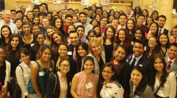
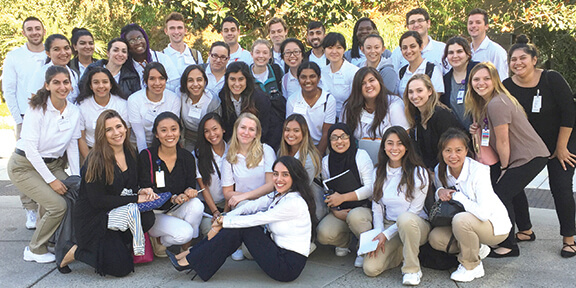
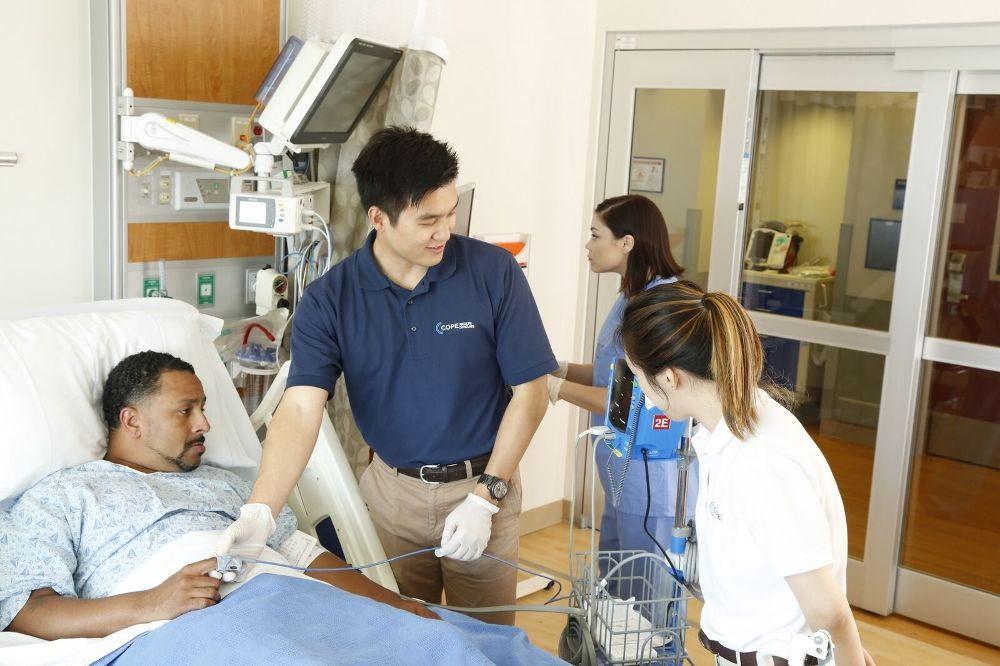
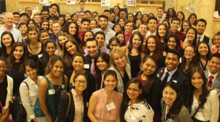
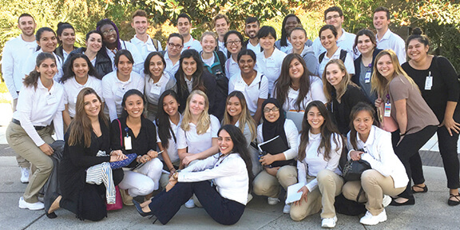
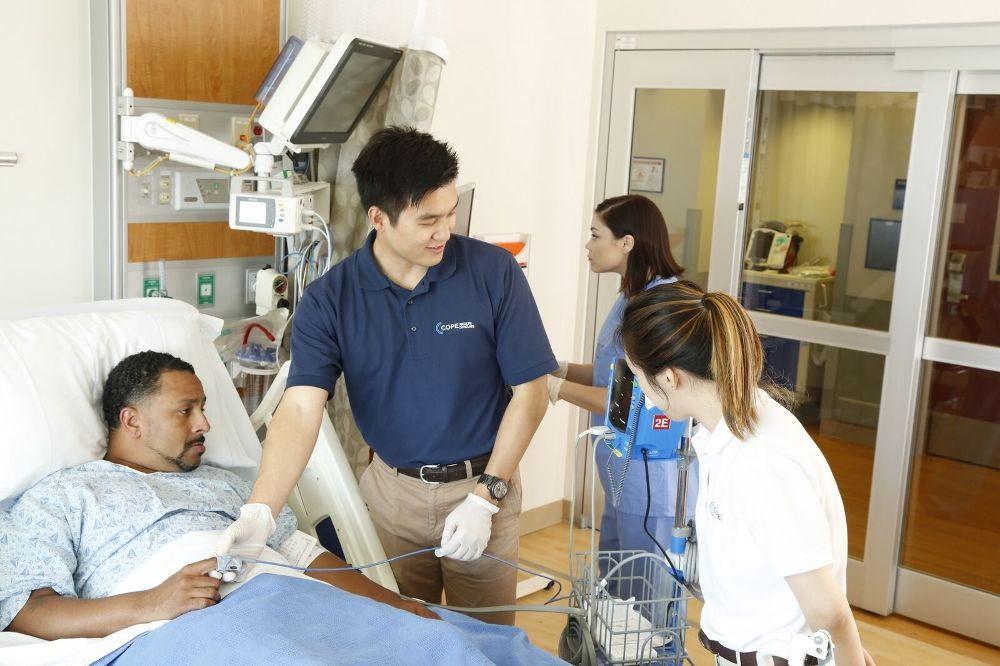

Jasmine Nguyen
Hello, my name is Jasmine Nguyen, a second-year student from the University of California, Riverside, who is currently a Biology major. I am currently looking for either a research opportunity or a hospital internship to add to my current experience. My goal in the next twelve to fourteen years is to be either a cardiothoracic surgeon or anesthesiologist.
From 2016 to 2017, I had volunteered to be a companion at a senior center for elderly afflicted with dementia and Alzheimers. During this experience, I found great joy being a companion for the elderly. What I was required to was to provide a listening ear for them, help them walk around the perimeters of the center, do crafts with them, and in general just be a friend for them. During my duration as a volunteer at Shady Oaks Senior center, I gained many skills from not only working with elderly patients but also working with staff and fellow volunteers.
Skills I gained from this job:
Communication
Listening
Creativity
Teamwork
From 2015 to 2018, I had worked as both the cashier and barista for Starbucks. This job taught me many great hard and soft skills that can be applied to both a research lab or a medical internship. The skills that I learned from handling customers, managing money, making drink after drink without stops are what I believe to be valuable assets.
Skills I gained from this job:
Teamwork
Leadership
Management
Professional/Friendly Attitude
Efficient and quality work
As a barista, during rush hours at Starbucks, you must be able to communicate and work together with your fellow colleagues or more mistakes can occur which causes customers to be dissatisfied. Also working with many customers has given the skillsets to maintain a friendly demeanor even at times I feel crises. These skills will be valuable at a hospital as you must maintain calm in front of patients in order to not cause alarm and also great communication skills and leadership is essential when handling patient and ensuring no one is injured.
From 2019 - 2020, I had first-hand experience working at a hospital. I was in Hospital Internship called COPE Scholar, which gave future medical students hands-on experience. During this internship, we were treated as nurses and each month we worked on different floors, from administrative work and the ER, all the shift I did was amazing as it alowwed me to see how life as a medical proffesional was. We were allowed to shadow doctors, nurses, and other aides during the coarse. The skills I learned from this is invaluable as it mad eme more comfortable and prepared to be in a hospital setting.
Skills I gained from this job:
CPR training
PAtient Care
Administrative skills
Patience
Leadership
These skills that I have gained from my different jobs and internships, have given me a well-rounded skill set that would make me a valuable candidate for a research or hospital position.
Experience
Volunteer
• Responsible for caring for elderly patients
• Administrative work
COPE Scholar
• Patient care
• Admin Work
• Sterile Storage
• Aid for nurse
Education
UC Riverside
Portfolio






